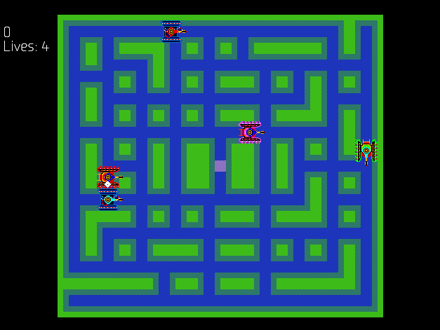

This is a recreation of the game Tron: Battle Tanks using a custom made Game and Physics engine. The project is written in C++ and takes use of the SDL and glm library. The game supports both Gamepad(Xbox) using XINPUT and Keyboard controls
One challenge was implementing a pathfinding system for the AI tanks that could navigate the maze-like levels while avoiding obstacles and other tanks.
